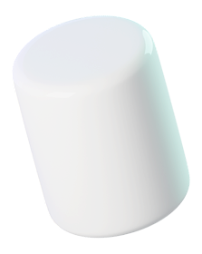
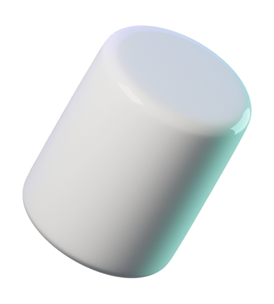
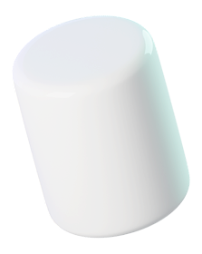
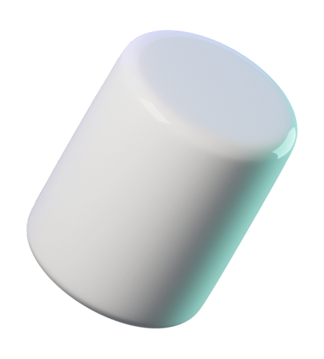

Делайте снимки
и записывайте экран
в 1 клик
Вместе со Screenshoter можно в один клик сделать снимок или записать происходящее на
экране ПК, чтобы поделиться
с кем
угодно


Бесплатная программа
для Windows


Встречайте — скриншоты и запись экрана 2 в 1
Больше не нужно искать две отдельные программы
для скриншотов и записи экрана. Screenshoter поможет сделать снимок экрана, записать
видео
и поделиться им с кем
угодно.
Можно выделить весь экран, определенную область или активное окно

Снимок и запись
экрана в 1 клик
экрана в 1 клик

Моментальная
ссылка на файл
ссылка на файл

Удобный
редактор снимков
редактор снимков

Бесплатно
и без регистрации
и без регистрации

Запись экрана
Недостаточно снимков? Запишите происходящее на экране со своим голосом или звуком системы.
Достаточно нажать две кнопки мыши, выделить
необходимую
область и начнется запись
видео
с экрана. Быстро
и без сложных настроек


В один клик
Не нужно запоминать комбинации клавиш
на клавиатуре, чтобы сделать скриншот или начать записывать видео
с экрана.
Просто нажмите две кнопки мыши
или настройте
горячую кнопку на любую удобную клавишу


Мгновенная ссылка
Мгновенное получение ссылки на снимок
или видео.
Вы только нажали Enter, а ссылка уже
в буфере обмена.
Перейдя по ссылке, можно будет посмотреть ваш снимок
или записанное
видео
Файлы хранятся в течение 1 года с момента
создания. Можно их удалять самостоятельно.
В истории программы доступны
последние 5 скриншотов
В истории программы доступны
последние 5 скриншотов


И редактор
снимков
Более 5 инструментов для редактирования. Выделяете область и редактируете.
Если неверно выбрали область — не беда, можно без проблем её передвинуть
и/или
изменить размер,
не удаляя то,
что уже нарисовано!


Наши преимущества

Выбирайте
цвет
и рисуйте карандашом
цвет
и рисуйте карандашом

Используйте стрелку,
круг или квадрат
для выделения
для выделения

Оставляйте комментарии

Размывайте необходимую
область
область


Screenshoter - это функции на каждый день

01.
Обмен
идеями
идеями
Когда нужно что-то наглядно показать коллеге, исполнителю или заказчику — можно
сделать снимок экрана и добавить
к нему комментарий.
к нему комментарий.
А если ситуация требует более детального объяснения — окей, не проблема.
Screenshoter поможет записать видео экрана
вместе
с вашими голосовыми
комментариями
с вашими голосовыми
комментариями

02.
Создание
инструкций
инструкций
Нужно что-то наглядно объяснить? Создавайте удобные, пошаговые инструкции,
добавляя
комментарии
и визуальные отметки в необходимом месте скриншота.
и визуальные отметки в необходимом месте скриншота.
Поделиться снимком или видеозаписью можно с помощью ссылки, которая мгновенно
появляется в буфере обмена

03.
Обратная
связь
связь
Если в процессе работы приложения, сайта или сервиса возникла ошибка, её можно
моментально зафиксировать.
Отправьте скриншот в техподдержку, где будет видно, в чем именно заключается
проблема
 




Как использовать Screenshoter
Шаг 1.
Скачайте программу
на свой ПК или ноутбук
на свой ПК или ноутбук
Шаг 2.
Запустите Screenshoter:
программа будет работать
в фоновом
режиме
программа будет работать
в фоновом
режиме
Шаг 2.
Наслаждайтесь удобством
и быстродействием
и быстродействием
Screenshoter полезен всем, кто работает в интернете
Согласовывайте рабочие вопросы, показывайте интересные вещи и обсуждайте любые темы.
Делитесь комментариями с помощью
бесплатного
инструмента 2 в 1

Без регистрации:
не нужно вводить
никаких персональных данных
не нужно вводить
никаких персональных данных

Бесплатно,
без скрытых платежей и комиссий
без скрытых платежей и комиссий

Неограниченное
количество скриншотов
и записей

Файлы хранятся
в течение 1 года — вы можете удалить их
в любое время
в течение 1 года — вы можете удалить их
в любое время
FAQ
01.
Платная ли программа?
01.
Платная ли программа?
Нет, Screenshoter абсолютно бесплатная. Вам не нужно платить за скачивание, установку или использование
программы —
все функции бесплатные
02.
Для каких платформ доступен Screenshoter?
02.
Для каких платформ доступен Screenshoter?
Screenshoter доступен для Windows, macOS и Linux. Вы можете использовать приложение на любой из этих
операционных систем
без ограничений функциональности.
03.
Чем Screenshoter отличается от других программ
для создания скриншотов?
для создания скриншотов?
03.
Чем Screenshoter отличается от других программ
для создания скриншотов?
для создания скриншотов?
Screenshoter отличается простотой использования, быстродействием и богатым функционалом. Программа позволяет
делать
скриншоты с задержкой, записывать видео экрана и редактировать изображения прямо в приложении.
04.
Куда сохраняются скриншоты и видео?
04.
Куда сохраняются скриншоты и видео?
По умолчанию все скриншоты и видео сохраняются в папку "Screenshoter" внутри директории "Изображения". Вы
можете
изменить путь сохранения в настройках программы.
05.
Можно ли удалить
файлы с сервера
в пару кликов?
файлы с сервера
в пару кликов?
05.
Можно ли удалить файлы с сервера
в пару кликов?
в пару кликов?
Да, вы можете удалить любые файлы, загруженные на сервер, всего в несколько кликов через раздел "Управление
файлами" в
личном кабинете.
Присоединяйтесь к 50 000 + пользователей, которые ежедневно используют Screenshoter в
работе
и личной переписке